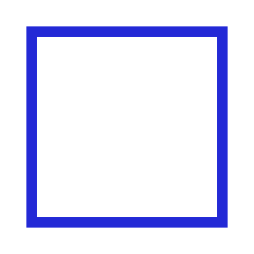
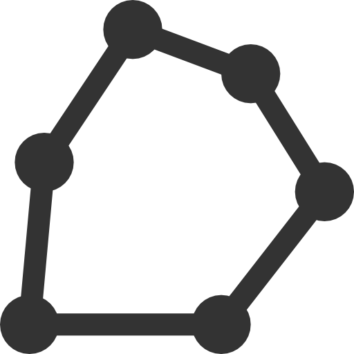
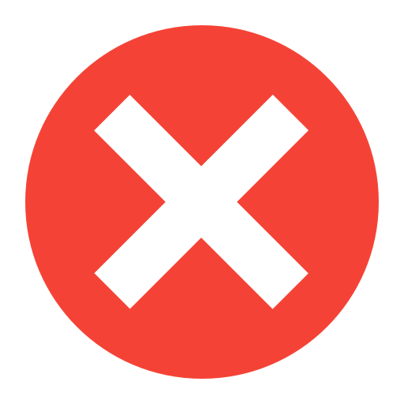

Укажите область для тренировки
+
−
×
Маршрут готов
Точек: 10
Последовательность
Дистанция: 0 км
🎧 Начать навигацию

🎯 Навигация
Расстояние: - м
Следующая точка:
Выберите точку
⏹️ Пауза
🔇
✕
Меню
×
📥 Сохранить GPX
📤 Загрузить GPX
📂 Сохранённые маршруты
Настройки
×
Количество точек
Уровень сложности
🟢 Новичок (плотное размещение)
🟡 Любитель (сбалансированное)
🔴 Эксперт (максимальное разнесение)
Сохранённые маршруты
Закрыть
Пока нет сохранённых маршрутов
✏️ Редактирование последовательности
Закрыть
Перетащите точки для изменения порядка или введите последовательность вручную:
Или введите последовательность (через запятую):
Применить